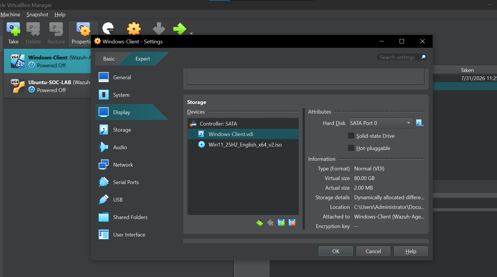
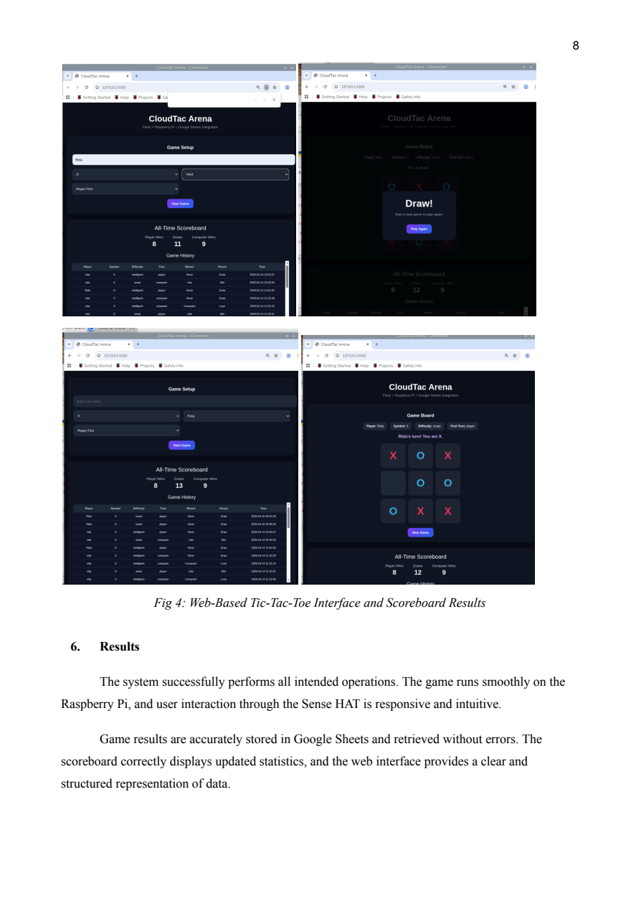

Cybersecurity & Networking
SIEM monitoring, Wazuh, Wireshark, TCP/IP, HTTPS/TLS analysis, network troubleshooting, vulnerability assessment, incident-response foundations, OWASP Top 10, and secure network architecture.
SECURITY MINDSET. ENGINEERING CURIOSITY.
Hi, I'm Rida Fathima.
Information Systems Engineering student at Humber Polytechnic. I connect software, cloud infrastructure, and cybersecurity to understand how systems work—and how to protect them.
Seeking a cybersecurity co-op · May 2027
PROFILE
I combine software, infrastructure, networking, and hardware experience to understand how complete systems behave—and where they can fail. Through academic, research, and industry projects, I have designed, tested, secured, documented, and troubleshot solutions across cloud, web, embedded, and virtualized environments.
My strongest work sits at the intersection of security and systems: monitoring endpoints with a SIEM, analyzing network traffic, administering Linux and Windows environments, securing application data, and translating technical findings into clear documentation.
CAPABILITIES
A cross-functional skill set suited to SOC, cybersecurity, cloud support, systems administration, IT, and junior software roles.
SIEM monitoring, Wazuh, Wireshark, TCP/IP, HTTPS/TLS analysis, network troubleshooting, vulnerability assessment, incident-response foundations, OWASP Top 10, and secure network architecture.
Azure, virtual machines, Linux and Windows administration, Oracle Linux, SSH, VPN and Tailscale connectivity, user permissions, remote access, virtualization, Bash, and PowerShell.
Python, Java, C, SQL, JavaScript, HTML/CSS, Next.js, TypeScript, Flask, SQLite, REST/API integration, parameterized queries, Git, and GitHub workflows.
Raspberry Pi, Arduino, FPGA, VHDL, Sense HAT, sensors, actuators, circuit design, breadboarding, SolidWorks, AutoCAD, hardware-software integration, and real-time testing.
SELECTED WORK
Each project demonstrates how I approach architecture, implementation, testing, security, and documentation.
HONEYGUARD / LAB ARCHITECTURE
Architecture illustration · no live traffic
01 / FEATURED · OCTOBER 2026
A controlled lab. A clearer view of security.
Contributed to a FastAPI attack simulation panel that runs approved tests, validates HTTP responses, and streams execution events to a live terminal. A separate threat-intelligence application reads honeypot evidence for monitoring and reporting.
Controlled testing. Response validation does not prove exploitation or detection.

CYBERSECURITY · SIEM · HOME LAB
Designed an isolated SOC environment using Wazuh, Ubuntu Linux, Windows 11, and VirtualBox. Built practical capability in centralized endpoint monitoring, security events, log visibility, virtual networking, IP addressing, and infrastructure troubleshooting.
Read full case study →
AI · EMBEDDED · CLOUD · SECURITY
Built a Raspberry Pi and Sense HAT game with random and Minimax AI, joystick control, LED visualization, SQLite data storage, Google Sheets cloud integration, a Flask web interface, and Wireshark-verified HTTPS/TLS communication.
Read full case study →TEAM LEAD · ROBOTICS · DESIGN
Led planning, documentation, task distribution, embedded programming, and system development for a bio-inspired robotic butterfly using Arduino, sensors, DC motors, CAD assemblies, and iterative testing.
Try Ornibot ↗Source on GitHub ↗WEB ENGINEERING · ANALYTICS
Collaborative application · public source unavailable
Implemented Next.js and TypeScript features, resolved frontend and backend issues, worked with Linux servers, SSH, VPN, Oracle Linux, and GitHub pull requests, and automated program-level analytical report generation.
FPGA · REAL-TIME SYSTEMS
Hardware project · requires an FPGA development board
Programmed FPGA hardware to process environmental sensor inputs in real time, configured OLED visualization, interfaced digital components, and validated reliable signal transmission through hardware testing.
EXPERIENCE
Roles spanning cloud infrastructure, technical support, robotics education, administration, and STEM engagement.
APR 2026 — PRESENT
Humber Polytechnic
JAN 2026 — JUL 2026
Code-it-Hacks
JUL 2025 — APR 2026
World Congress Organization
JUL 2026
Afghan Women’s Organization
LEADERSHIP & SERVICE
I use technical communication, organization, and inclusive leadership to strengthen the engineering community.
PRESIDENT · 2026 — 2027
Provide strategic direction, oversee events and professional-development initiatives, represent the club with internal and external stakeholders, and support executive-team collaboration.
Visit Humber’s Women in Engineering page ↗PROGRAM QUALITY
Contribute the student perspective to accreditation activities and support the organization of program evidence, documentation, learning outcomes, and continuous-improvement work.
MENTORSHIP
Mentor students through technical projects, post-secondary transition, STEM activities, and engineering challenges while promoting confidence, belonging, and practical problem-solving.
EDUCATION
Humber Polytechnic · Sept 2024 — April 2029
Specializing in Data Security, with relevant coursework in Embedded Systems, Electronic Circuits, Digital Systems, Cloud Computing, and Cybersecurity Fundamentals.
LET’S CONNECT
I’m seeking a 4, 8, or 12-month co-op starting May 2027 in cybersecurity, SOC analysis, or information security. Let’s talk about the systems your team is building.